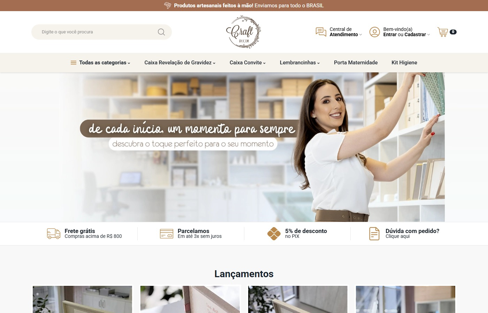

Início
01
Primeira dobra com marca, busca, categorias e promessa visual.
A abertura reúne faixa de envio, busca, logo, atendimento, navegação por categorias e banner principal, deixando claro que a loja trabalha com memórias e produtos personalizados.